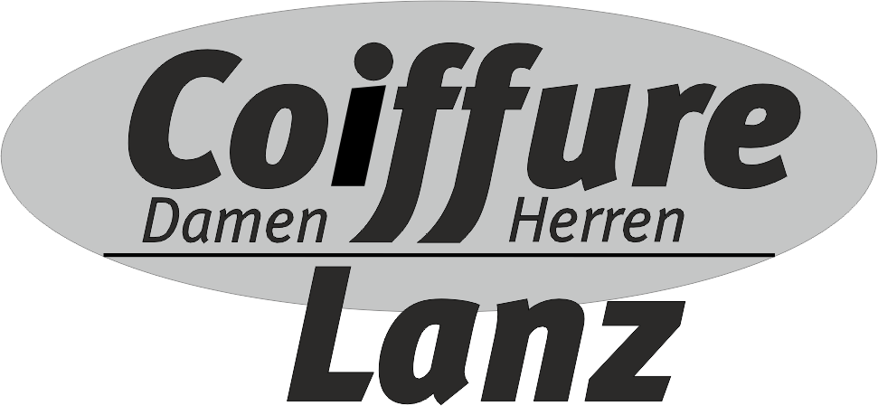

Vreni Lanz · BleienbachFür einen
Für einen
neuen Schnitt.
Coiffeur Lanz in Bleienbach.
Bei Vreni Lanz.
Ein Salon mit einer klaren Adresse in Bleienbach. Für einen Termin oder Fragen erreichen Sie Coiffeur Lanz direkt.
Hier finden Sie uns
Eichi 20Bleienbach
3368 Bleienbach
KontaktWir hören
Wir hören
von Ihnen.
Telefon 062 922 31 82
Mobil 079 713 62 32
info@coiffeurlanz.ch